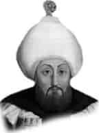

III. MUSTAFA
Annesi : Mihrimah Sultan
Doğumu : 28 Ocak 1717
Vefatı : 21 Ocak 1774
Saltanatı : 1757 - 1774 (17 yıl)
III. Mustafa orta boylu, iri gözlü, yassı burunlu ve siyah sakallı idi. Heybetli ve kuvvetli bir vücuda sahipti. Çok iyi bir tahsil yaptı. Çok çalışkan ve cömert bir insandı. Bilhassa şiirde büyük kabiliyeti vardı. (Cihangir) mahlasıyla yazdığı şiirler pek maruftur. Meşhur şiirlerinden birisi şudur:
Yıkılıp dur bu cihan sanma ki bizde düzele,
Devlet-i çerh-i deni verdi kamu müptezele.
Şimdi ebvab-ı saadetle gezen hep hezele,
İşimiz kaldı hemân merhamet-i Lem Yezel’e.
Astronomi ile meşgul oldu. İslâm ve Osmanlı tarihlerini gayet geniş olarak tetkik etti. Memleketine en büyük felâketin Rusya’dan geleceğini çok iyi bildiğinden, müdafaa için geceli gündüzlü çalışarak, her türlü hazırlığı yaptı. Muharebelerde sarf edilmek üzere iç ve dış hazineyi altın ile doldurmuştu. Tahta çıktığında 40 yaşında idi. Devletin büyük bir ıslahata ihtiyacı olduğunu çok iyi bilen ve bu hususta mühim hamleler yapan bir hükümdardı. Süveyş Kanalı’nı bile açtırmayı düşünüyordu. Fakat iş başına getirecek kıymetli kimseleri bulamamanın üzüntüsü içindeydi.
1766 yılında olan zelzelede yıkılan Fatih ve Eyüp Sultan camilerini ve bütün İstanbul’u adeta yeniden imar etmiştir. Kara ve Deniz mühendishaneleri onun zamanında kurulmuştur (1764). 1768’de Rusya ile savaş başladı ve 1774 yılında bitti. Savaş neticesinde Kaynarca Antlaşması yapıldı. Büyük ve önemli ölçüde toprak kaybı oldu. Devletin esas gerileme devri de bundan sonra başladı. Rus Savaşı’nda üzüntüsünden hastalanmış ve vefat etmiştir. Vefatında elli yedi yaşına yaklaşıyordu. Lâleli Camii dört yıl içinde bu devirde inşa edildi.
Erkek çocukları: Selim, Mehmet.
Kız çocukları: Şah, Fatma, Bekhan, Fatma, Hibetullah.